English
English
 简体中文
简体中文
東京の主要観光地へのアクセス
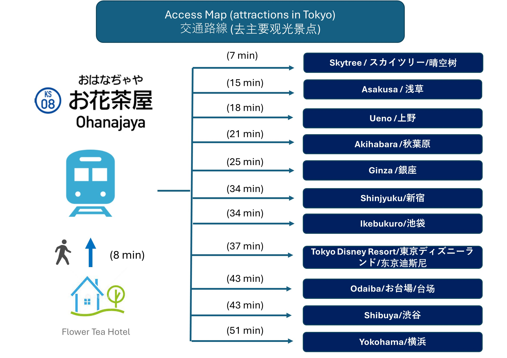交通の観点から、一日単位で訪ねるスポットのプランを作ってみました。ご参考ください。
Day 1: 上野、秋葉原
 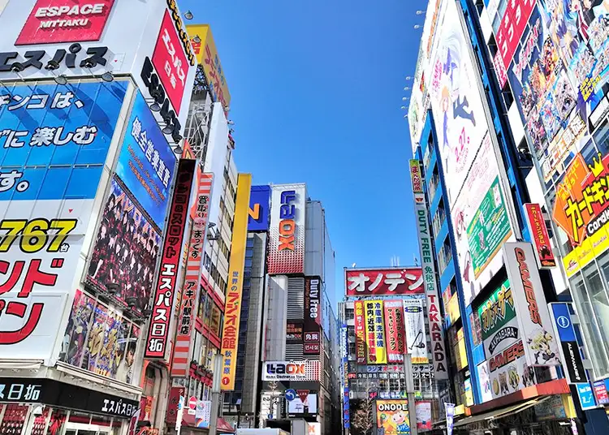
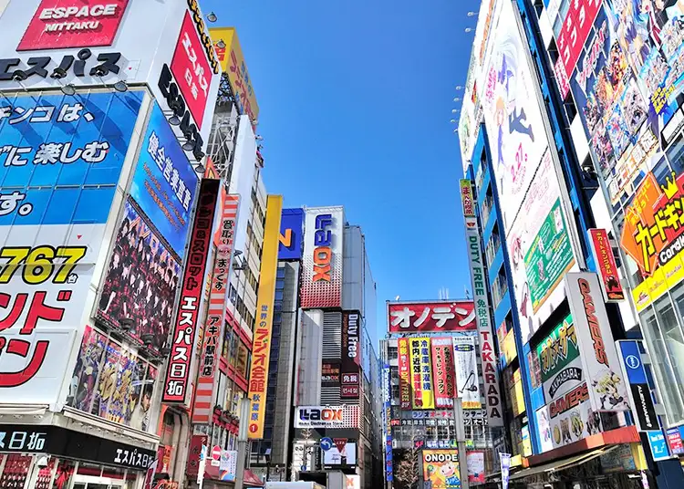
上野駅は以前東京の中心です。アクセスしやすく、交通便利です。観光地が多いだけではなく、ショッピングもしやすいです。
秋葉原は世界的な電気の街！そして、ゲームやアニメ、ポップカルチャーの発信地であり中心地です！
Day 2: スカイツリー、浅草
 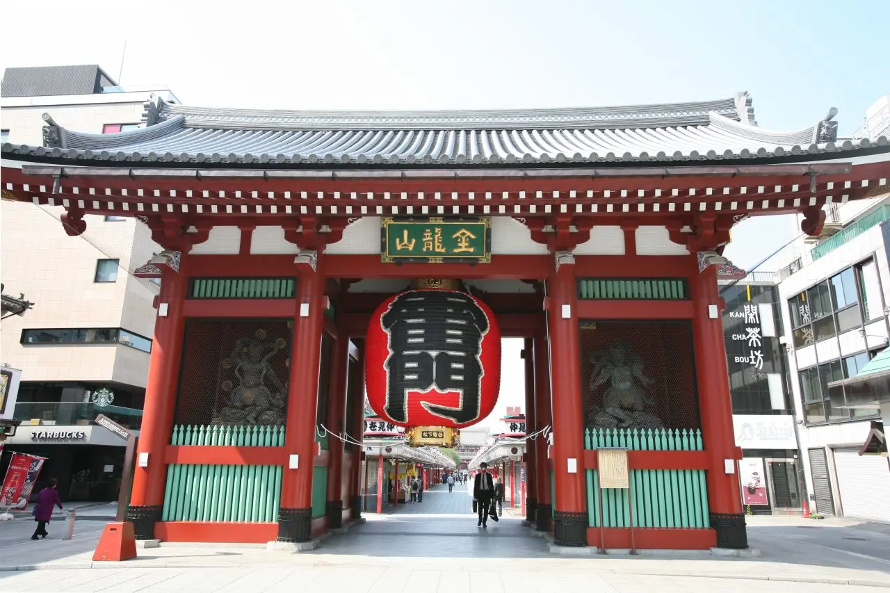
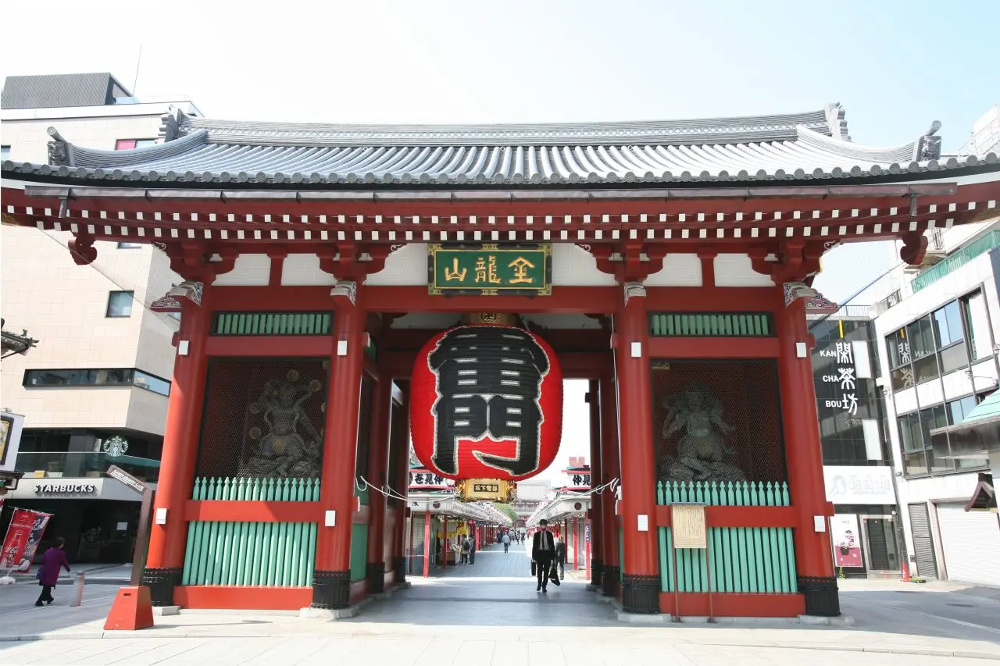
東京スカイツリーは世界一高いタワーとして「ギネス世界記録」に認定されている。
関東平野を一望できます。
日本では最も有名な観光地といえる「浅草」を観光しよう。 歴史ある神社仏閣、日本の食文化が感じられる和菓子やグルメなど、東京で最も日本らしさを感じられるエリア
Day 3: 渋谷、原宿、明治神宮
 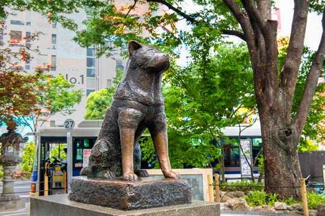
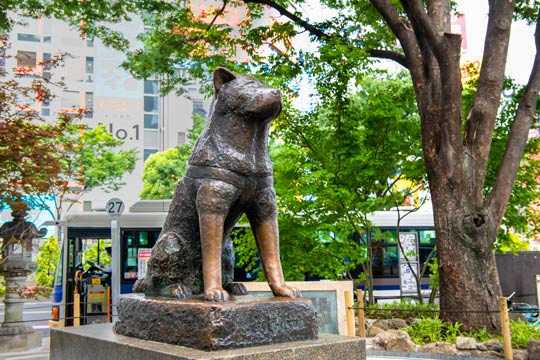
東京の中でもショッピングエリアとして人気の「原宿」「渋谷」「新宿」を巡れば、欲しいものはなんでも買えるといっても過言ではない。
JR渋谷駅のハチ公口を出てすぐに鎮座する「ハチ公像」と一緒に写真を撮りましょう。
明治神宮は初詣には例年日本一の参拝者数を記録し、都心とは思えないほどの豊かな緑に恵まれており、参道を歩いているだけでも癒やされるスポットです。
Day 4: 池袋、新宿


サンシャイン水族館 サンシャインシティの中にある『サンシャイン水族館』は、日本初の都市型高層水族館です。“天空のオアシス”をコンセプトに空・光・水・緑に満ちた空間で、都会の真ん中とは思えない気分を味わえます。
新宿は高層ビルが立ち並び、たくさんの商業施設や巨大な歓楽街のあるビッグタウン
Day 5: 東京駅、皇居
 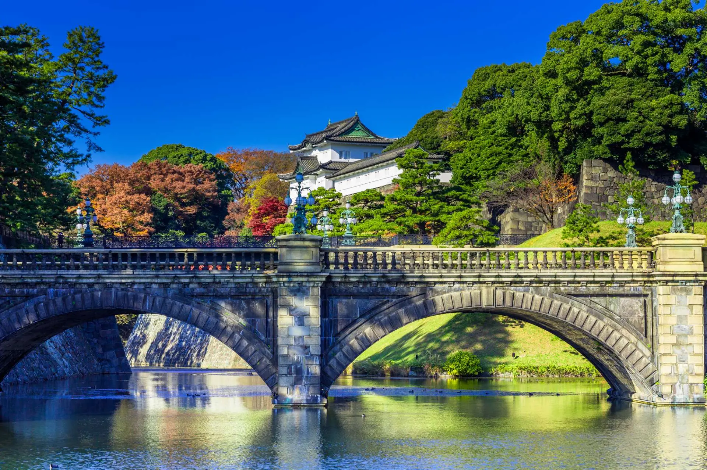
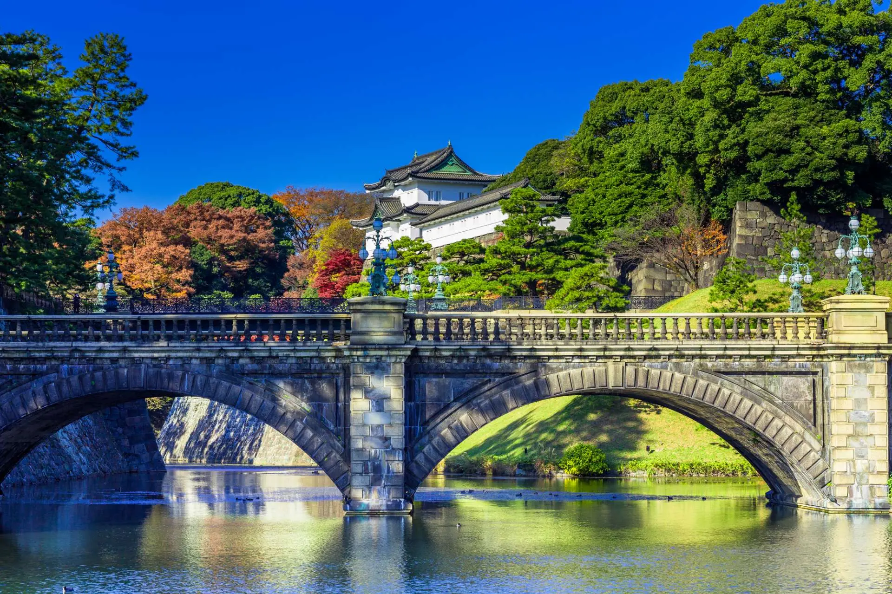
1914年12月に開業した日本の玄関口・東京駅は美しい建物です。駅一周は高層ビルと自然を融合した景色を楽しめます。
「天皇」の住居である「皇居」とその周辺スポットは、400年以上もの歴史ある建築物や、一年を通じて綺麗に手入れされた花々、自然の数々など、見どころが満載。
Day 6: 豊洲市場・東京タワー・銀座


東京の台所として都民の胃袋を支えてきた「築地市場」が老朽化に伴い2018年に豊洲へ移転。
1958年に誕生した東京タワー。高さは333mと、当時は、自立式鉄塔として、パリのエッフェル塔を超える世界一の高さを誇った.
Day 7: お台場

室内テーマパークや海に面した広い公園がある「お台場」は、家族でアクティブに遊びにはピッタリなエリアです。
お台場にある国内最大級の屋内型テーマパーク。コンセプトは「デジタル」と「リアル」の融合を意味する「デジタリアル(DigitaReal)」
Day 8: 東京ディズニーランド・東京ディズニーシー


“夢と魔法の王国”のキャッチコピーで愛される東京駅から電車で約15分の大型テーマパーク。子ども連れの家庭にとっては欠かせないスポットです。
東京ディズニーシーは「東京ディズニーランド」のお隣にある“海にまつわる物語や伝説”を体現したテーマパーク
Day 9: 鎌倉
 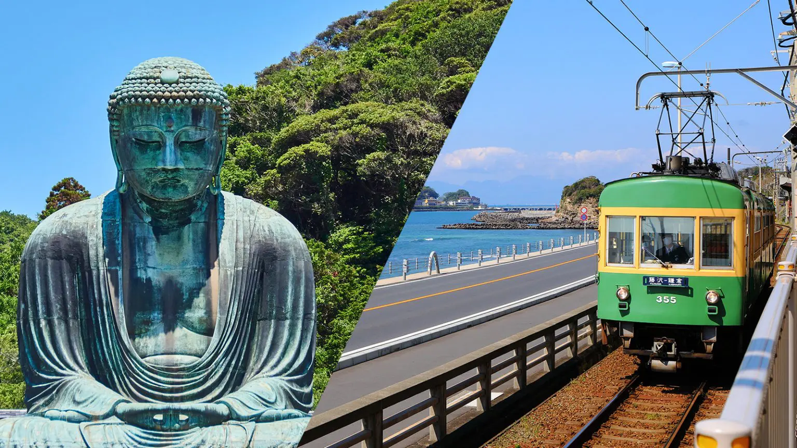
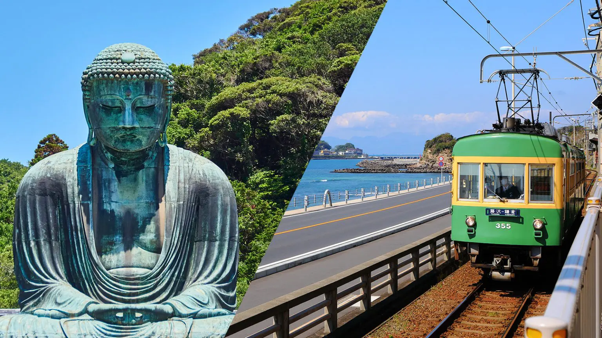
東京から1時間で行ける場所です。海と山に恵まれ、神社仏閣が多い「鎌倉」では、自然と神社・お寺が調和した四季折々の景観が楽しめる。
「江島神社」は、「辺津宮」、「中津宮」、「奥津宮」の三社からなる神社の総称です。ご祭神は三姉妹の女神。海の神、水の神の他に、幸福・財宝を招き、芸道上達の功徳を持つ神として多くの参拝客が訪れます。